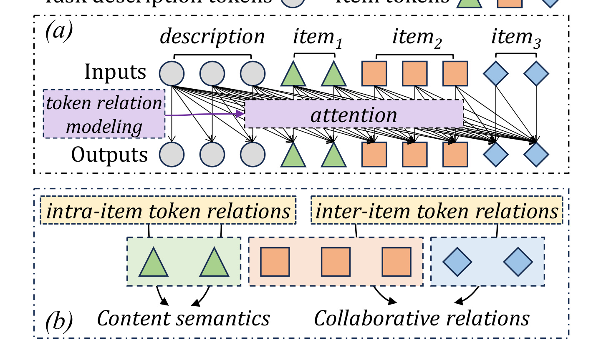
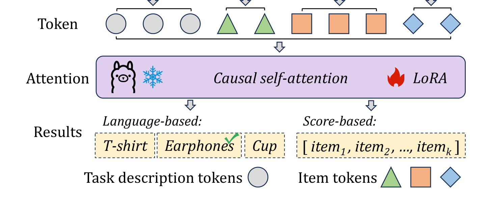
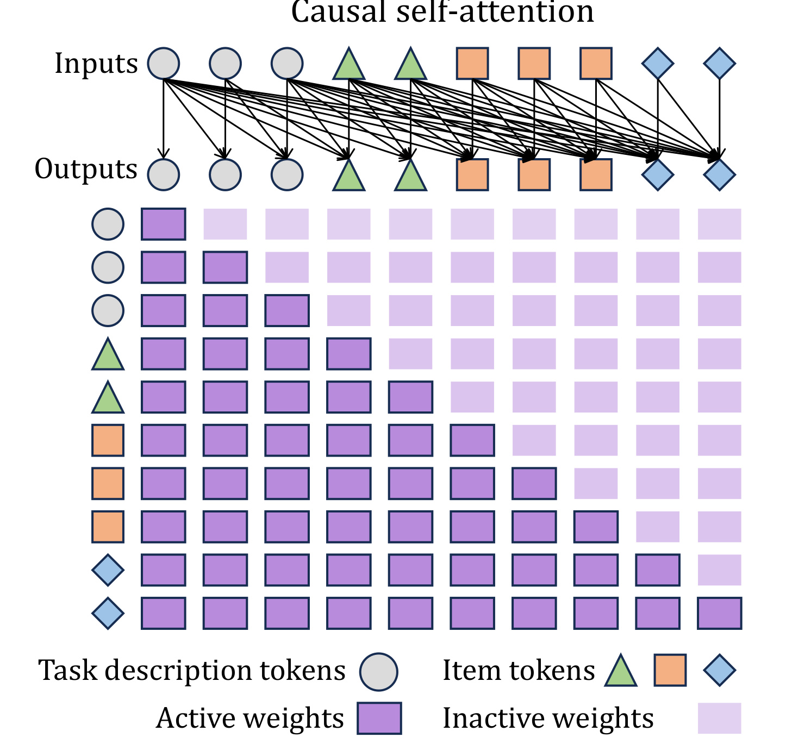
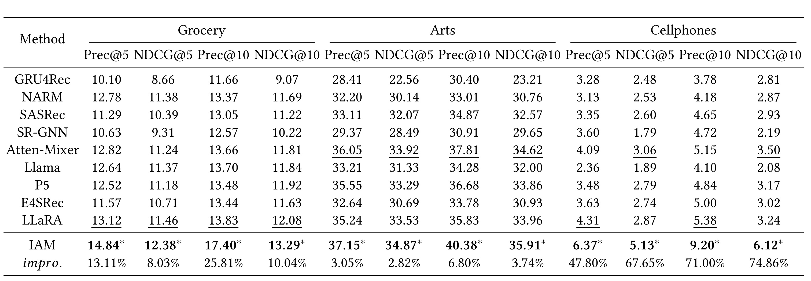

这篇 The Web Conference 2026 论文《From Token to Item: Enhancing Large Language Models for Recommendation via Item-aware Attention Mechanism》来自 City University of Hong Kong，一作 Xiaokun Zhang，作者包括 Bowei He、Jiamin Chen、Ziqiang Cui 和 Chen Ma；论文入口采用可访问的 arXiv:2603.19693。论文关注一个很具体但容易被忽略的问题：把推荐历史和任务描述拼成 token 序列交给 LLM 后，标准 causal self-attention 会把所有 token 当成同一层级的语言单元处理，而推荐系统真正需要建模的基本单位往往是 item。作者提出 IAM（Item-aware Attention Mechanism），用 intra-item attention 与 inter-item attention 两类专门 mask，把 item 内语义和 item 间协同显式拆开，并在三个 Amazon 序列推荐数据集上验证它相对传统序列模型和 LLM4Rec baseline 的收益。代码或项目页本轮未核验到公开入口，因此复现建议主要基于论文公式、实验设定和 PDF 内容展开。
1. 背景和问题
LLM 进入推荐系统以后，最自然的做法是把用户历史行为转成自然语言指令：前面放一句“请根据用户买过的商品预测下一个商品”，后面接一串商品标题、类目或描述，再让语言模型生成下一个 item title，或者把隐藏状态接一个 scoring head 做全量排序。这条路线的优势很明显：item title 中包含丰富语义，LLM 预训练已经学到大量世界知识，指令微调和 LoRA 又能以相对低成本把通用语言模型适配到推荐任务。但它也带来一个结构性错位：推荐里的行为序列不是普通连续文本，每个 item 是用户选择过的离散对象，协同信息来自 item 与 item 之间的共现、转移和替代/互补关系；如果模型只在 token 层面混合这些信息，就可能把“一个 item 内部的词语组合”和“不同 item 之间的协同关系”混在一起。
传统序列推荐模型一直把 item 当作基本单位。GRU4Rec、NARM、SASRec、SR-GNN、BERT4Rec 等方法的输入通常是 item ID 或 item embedding 序列，模型每一步看到的是“用户第 $t$ 次交互了哪个 item”，而不是“这个 item title 被 tokenizer 切成了哪些子词”。因此这些模型天然更接近协同过滤视角：它们学习的是 item transition、session intent、co-occurrence 和用户兴趣演化。LLM-based recommendation 则往往为了利用文本语义，把 item title 与任务描述拼接为 token sequence，再沿用标准 Transformer attention。这样一来，模型很擅长理解标题语义，却不一定知道哪些 token 属于同一个 item、哪些 token 跨 item 才能表达协同行为。
论文把这个问题称为 token-centric paradigm 的局限。现有方法为了补协同信息，通常会给 LLM 额外喂 collaborative tokens：有的直接使用 item ID，有的用启发式 re-indexing，有的先训练 SASRec 等协同模型再把 item embedding 投影成 token。例如 E4SRec、P5、LLaRA、CoLLM、A-LLMRec、iLoRA 等路线，目标都是让 LLM 除了看标题语义，还能接触到用户—物品交互中的协同结构。但作者指出，这些方法大多仍然把 collaborative signal 作为 token 插入模型，底层 attention 仍然是不区分 item 边界的标准 token attention。也就是说，协同信息被编码进 token 后，模型依然用语言建模的 token-token 关系去处理它，而没有显式把 item 当作推荐任务的基本单元。
这篇论文的出发点可以概括成一句话：推荐里的 token 关系至少有两种语义，不能都交给同一种注意力。第一类是 intra-item token relations，也就是同一个 item title 或 item description 内部 token 之间的关系，例如商品名、颜色、品牌、型号、尺寸等词共同构成 item 内容语义。第二类是 inter-item token relations，也就是不同 item 中 token 之间的关系，它们才更接近用户行为序列里的 item-item 协同关系。普通 attention 同时看这两类关系，既没有显式保护 item 内语义，也没有专门强化 item 间协同；IAM 则试图把它们拆成两层。

Figure 1 是理解本文动机的关键。上半部分展示普通 LLM-based recommendation：任务描述 token、item token 混在同一个序列里，attention 在 token 粒度上连边，模型只知道某个 token 可以关注另一个 token，却不知道这些 token 是否属于同一件商品。下半部分把 token 关系拆开：同一 item 内部的 token 组合承载 content semantics，不同 item 之间的 token 交互才承载 collaborative relations。这个图的价值不在于画了一个复杂模型，而在于把“LLM 为什么会错过 item-level collaborative information”说清楚了：问题不是 LLM 没有能力，而是输入结构和注意力掩码没有把推荐任务的对象边界告诉它。
从推荐系统工程角度看，这个诊断很有现实意义。许多线上推荐链路并不缺 item 文本和多模态内容，真正难的是如何让语义理解与协同信号对齐。若只强调 LLM 语义能力，模型可能更偏向标题相似、类目相似或语言描述相似；若只强调 ID 协同，又会丢掉冷启动 item 的语义泛化。IAM 的目标正是补这中间的一层：不额外依赖预训练协同 token，也不要求复杂外部检索，而是在 LLM 内部用 item-aware mask 让模型分别学习 item 内容语义和 item 间协同。它不是把 LLM 改造成传统 ID 模型，而是让 LLM 在处理 token 时知道 token 所属的 item 边界。
论文的另一个背景是，LLM4Rec 的评估正在从“小候选集语言生成”转向更严格的 full-ranking。早期一些 LLM 推荐实验会让模型从 20 个候选 item 中选一个，这对语言模型比较友好，但和真实推荐的全库排序仍有差距。本文采用 full-ranking：模型要在整个 item set 中排序候选，评价 Prec@5、NDCG@5、Prec@10、NDCG@10。这使得协同信息更加重要，因为真实 item 集合里标题相似、语义接近、热度不同的商品很多，单纯语言语义很难稳定区分下一次交互最可能落在哪个 item 上。
因此，这篇论文的问题定义并不是“LLM 能不能做推荐”，而是“当 LLM 已经被用于推荐时，它的 attention 是否应该尊重 item 结构”。作者的核心判断是：现有 LLM 推荐方法继承了语言模型的 token-centric attention，这和推荐任务的 item-centric objective 存在错位；通过显式分离 intra-item 与 inter-item token relations，可以更好地利用 item-level collaborative information，并且不必把所有提升都寄托在额外 collaborative token、外部序列模型或更大 backbone 上。
2. 方法
2.1 问题定义与符号
论文处理的是序列推荐。设用户集合为 $\mathcal{U}$，物品集合为 $\mathcal{X}$，用户数和物品数分别为 $m=|\mathcal{U}|$ 与 $n=|\mathcal{X}|$。对某个用户 $u_i\in \mathcal{U}$，其历史行为序列写成：
符号解释：$S$ 是用户已经交互过的 item 序列，$x_t$ 是第 $t$ 个历史 item。每个 item $x_i$ 有文本特征 $r_i$，例如商品标题。序列推荐目标是基于历史序列 $S$ 预测用户下一次最可能交互的 item $x_{t+1}$。这一定义和传统 SR 一致，只是本文把 item title token 化后交给 LLM，而不是直接把 item ID embedding 喂给序列模型。
Table 1 给出后文公式中最容易混淆的符号。$\mathcal{X}$ 是 item set，$\mathcal{U}$ 是 user set；$v_i$ 是由 item textual feature 得到的 token，$e_i$ 是 token embedding；$S$ 是 item sequence，$S_t$ 是 token sequence；$ins$ 表示包含任务描述和 item title sequence 的 instruction；$h_i$ 是 self-attention 的第 $i$ 个输出 embedding；$y_i$ 是 item $x_i$ 被预测为下一次交互对象的分数。这个符号表值得保留，是因为 IAM 的创新点发生在 item 和 token 两个层级之间：如果只看 $S$，会误以为它仍是传统序列推荐；如果只看 $S_t$，又会忽视 item 边界。本文的核心就是在 $S$ 和 $S_t$ 之间建立结构化对应。
将 instruction token 化后，论文把 token 序列表示为：
符号解释：这里 $l$ 是 token 总数，$v_i$ 是第 $i$ 个 token，$e_i$ 是它的 embedding。注意 $S_t$ 中不只包含 item title token，也包含任务描述 token。item title 可能由多个 token 组成，多个 item 的 token 会连续排列在同一序列中。标准 LLM 看到的是 $[e_1,e_2,\ldots,e_l]$，但如果没有额外标记或 mask，它不会天然知道 $e_7$ 和 $e_8$ 是否属于同一个 item，也不会知道 $e_7$ 与 $e_{15}$ 是否代表两个 item 之间的潜在协同。
2.2 现有 LLM 推荐范式
论文把现有 LLM-based recommendation 总结为四个层次：instruction construction、token layer、attention layer 和 recommendation generation。第一步是构造 instruction-response pair。instruction 通常包括任务描述和用户历史 item title，例如“Please predict the next item a user would purchase, given the following purchased items: <title1>, <title2>, ...”。response 可以是 ground-truth item 的标题，也可以是用于 score-based ranking 的目标。这个过程把推荐任务改写成语言模型可以处理的形式。

Figure 2 展示了这条范式。输入端，任务描述 token 和 item tokens 被拼成一条序列；中间经过 causal self-attention 和 LoRA 微调；输出端可以走 language-based 路线，直接生成 item title，也可以走 score-based 路线，给候选 item 打分并排序。本文更关注 score-based full ranking，因为它更接近传统推荐评估。图中最重要的细节是：item tokens 被放进 LLM 后，默认进入同一个 attention 计算图，模型没有单独的 item block 或 item-level relation operator。
第二步是 token layer。LLM 的基本处理单位是 token，而不是 item。商品标题“iPhone 17 phone case”可能被拆成多个 subword token，另一个 item “wireless charger”也被拆成多个 token。若要引入协同信息，现有方法往往把 item ID、重索引编号或 SASRec embedding 也投影为 token，然后和文本 token 拼接。这种做法可以把协同信息塞入 LLM，但依然没有改变 attention 的本质：所有 token 都在同一个序列空间中以同样规则交互。
第三步是 attention layer，也是本文要改造的核心。给定 token embedding 序列 $E=[e_1,e_2,\ldots,e_l]$，标准 causal self-attention 对第 $i$ 个位置的输出为：
符号解释：$h_i$ 是第 $i$ 个位置输出，$f(\alpha_{ij})$ 是带 mask 的注意力权重，$V e_j$ 是 value 投影后的 token 信息；该式说明标准注意力会对所有可见历史 token 求和。
其中注意力打分为：
符号解释：$\alpha_{ij}$ 是位置 $i$ 对位置 $j$ 的 query-key 相似度，$Q$ 和 $K$ 将 token embedding 投到 query/key 空间。$Q,K,V\in\mathbb{R}^{d\times d}$ 是可学习投影矩阵。因果 mask 写成：
符号解释：$f(\alpha_{ij})$ 是 causal mask 后的注意力分数，$i<j$ 表示未来 token，不允许被当前位置关注；$i\ge j$ 表示当前位置及历史 token，可以进入求和。这个公式只表达自回归约束：当前位置不能看未来 token，但可以看过去所有 token。对语言生成来说，这很自然；对推荐来说，它没有区分“过去 token 属于同一个 item”还是“过去 token 属于另一个 item”。也就是说，公式中的求和范围由时间顺序决定，而不是由 item 边界决定。IAM 的核心就是改变这个可见范围，让某些 attention layer 只看同一 item 内部，另一些 layer 只看不同 item 之间。

Figure 3 展示标准 causal self-attention 的下三角激活矩阵。它说明普通 LLM 的 mask 只回答“能不能看未来”，不回答“应该看哪个 item”。在推荐输入中，item token 通常按历史顺序排列，所以下三角矩阵会允许某个 item 内 token 关注前面所有 item 的 token，也允许同一 item 内后面的 token 关注同一 item 前面的 token。问题是这两类关系语义完全不同：前者更像行为序列中的协同关系，后者更像 item 内容的短文本语义。IAM 将这两类关系拆成两个 attention layer，等价于在同一 LLM 结构内加入推荐任务的归纳偏置。
第四步是推荐生成。论文提到两类路线：language-based 和 score-based。language-based 方法让 LLM 生成下一件商品的标题，通常需要候选集简化或负采样；score-based 方法则把 LLM 输出 embedding 投影到 item score vector，最后得到：
符号解释：$rec$ 是最终 top-$k$ 推荐列表，$x_i$ 是进入列表的第 $i$ 个候选 item，$\mathcal{X}$ 是全量候选 item set。本文实验采用 full-ranking strategy，即对整个 item set $\mathcal{X}$ 排序，再取 top-$k$。这要求模型不仅会生成合理标题，还要在全库候选中把 ground-truth item 排到前面。IAM 的改造放在 attention 层，因此理论上可以服务 score-based ranking，也可以作为 language-based 方法的结构增强；但论文实验主要证明它在 full-ranking sequential recommendation 上的有效性。
2.3 IAM 的基本思想：把 item 边界写进 attention
IAM 的设计直觉非常直接：既然 token 关系有 intra-item 与 inter-item 两类，就分别用两种 attention layer 建模。intra-item attention layer 只允许一个 token 关注同一个 item 内的 token；inter-item attention layer 只允许一个 token 关注不同 item 内的 token。二者堆叠后，模型先在 item 内聚合内容语义，再在 item 间建模协同关系，或者在多层网络中交替强化这两类信号。与普通 attention 相比，IAM 不是改变 $Q,K,V$ 的投影方式，而是改变哪些 $\alpha_{ij}$ 可以参与求和。
可以用一个 item membership function 来理解它。设 $g(i)$ 表示 token $v_i$ 所属的 item 编号；若 $v_i$ 是任务描述 token，可以单独记为 special segment。对 item token 而言，intra-item mask 的可见条件近似为：
符号解释：$M^{intra}_{ij}$ 表示 intra-item layer 中 token $i$ 是否允许关注 token $j$；$g(i)=g(j)$ 要求两个 token 属于同一个 item，$i\ge j$ 保留自回归方向。否则为 $0$。这里仍保留 causal 方向，是为了不破坏 LLM 的自回归结构；但它把过去可见 token 限制在同一 item 内。这样做的结果是，某个 item title 内部的 token 可以互相整合，形成更稳定的 item content semantics。例如品牌、型号、颜色、容量等词不再被其他 item 的 token 过早干扰。
inter-item mask 则近似为：
符号解释：$M^{inter}_{ij}$ 表示 inter-item layer 中 token $i$ 是否允许关注 token $j$；$g(i)\ne g(j)$ 要求它们来自不同 item，因而只保留跨 item 的协同边。否则为 $0$。这层的目标恰好相反：它排除同一 item 内部 token 关系，只保留跨 item 的 token interactions。作者认为这类跨 item token 关系更能捕捉 collaborative relations，因为它们连接的是用户历史行为中的不同 item。比如用户先买手机壳再买充电器、先看相机再看 SD 卡，这类转移模式本质上是 item 间协同，而不是单个标题内部的语言结构。
如果把普通 attention 看成一张完整下三角图，IAM 就是在这张图上按 item membership 切出两张子图：一张只包含同 item 边，一张只包含跨 item 边。intra-item layer 防止 item 表示被过早混入其他 item 信息，inter-item layer 则防止协同建模被同一 item 内部词语搭配稀释。两层堆叠后，模型能同时保留“这个 item 是什么”和“这些 item 之间有什么关系”。这就是论文标题 From Token to Item 的含义：不是丢掉 token，而是让 token 服务于 item-level recommendation objective。
2.4 intra-item attention layer：先把一个 item 看清楚
intra-item attention layer 主要解决 item 内容语义建模。推荐输入中的 item title 往往很短，但信息密度高：商品名、品类、品牌、适用对象、规格参数可能全部挤在几个词里。如果这些 token 在普通 attention 中直接和其他 item token 混合，模型可能会把不同 item 的词语组合误当成同一个语义片段。intra-item attention 通过限制同 item 内关注，让每个 item 先形成相对独立的内容表示。
这一层的输入仍是 LLM 的 token embedding，输出仍是每个 token 的 hidden state；区别只在 attention mask。对属于 item $a$ 的 token $v_i$，它只能聚合 item $a$ 内部、且满足 causal 顺序的 token。任务描述 token 如何处理取决于实现细节，论文正文没有展开完整伪代码，但从 Figure 1 和 Figure 2 的结构可以推断，任务描述 token 作为 instruction context 仍然需要在推荐目标中提供全局任务语义。工程实现时可以把 task description 设为特殊 segment，使其对 item token 可见，或在 item-aware layer 外保留普通 LLM 层处理 instruction。
intra-item layer 的直觉类似“局部语义编码器”。它不会直接学习 item-item transition，而是让每个 item 的 token 表示更干净。对 LLM4Rec 来说，这一步很重要，因为 item title tokenization 可能把一个商品拆得很碎：例如电子产品标题里包含型号、版本、颜色、容量，服饰标题里包含品牌、性别、尺寸、风格。只有先把这些 token 聚成 item 内部语义，后续 inter-item layer 才能在更稳定的基础上比较不同 item。
和传统序列推荐相比，intra-item attention 是 LLM 路线独有的必要步骤。传统模型的 item embedding 已经是 item 级表示，不需要再从 token 拼回 item；LLM 路线为了利用文本语义，必须先经历 tokenization，所以需要一个机制把 token-level semantic fragments 重新组织成 item-level semantic unit。IAM 正是在这一点上补了普通 LLM 的结构缺口。
2.5 inter-item attention layer：把协同关系从 token 噪声中分离出来
inter-item attention layer 负责建模 item 间协同。它只允许 token 关注不同 item 中的 token，排除同 item token。这样做看似反直觉，因为一个 token 要理解自己所属 item 的语义，为什么不能看同 item 的其他 token？答案是：它已经可以在 intra-item layer 中完成这件事；inter-item layer 的职责不是再解释 item title，而是专门发现不同 item 的联系。把两种职责拆开，能够减少同一层 attention 同时承担语义聚合和协同建模的冲突。
协同关系在推荐里通常体现为共现、序列转移和用户兴趣连续性。若用户历史中出现“phone case”“charger”“earphones”，下一个 item 很可能仍属于手机配件生态；若历史中出现“paint brush”“canvas”“acrylic color”，下一个 item 可能是艺术用品。普通 token attention 可以捕捉这些词之间的语义相似，但不一定知道它们是不同历史 item 的行为证据。inter-item attention 则通过 mask 明确告诉模型：你现在关注的是跨 item token 关系，这些边应该服务于 item-level collaborative information。
从公式角度看，inter-item layer 仍然使用 $\alpha_{ij}=(Qe_i)^\top(Ke_j)$ 计算 token 相似度，但只有当 $g(i)\ne g(j)$ 且满足 causal 条件时，$\alpha_{ij}$ 才会被保留。这样既继承了 LLM 的表达能力，又把推荐任务的 item 边界变成了硬约束。与把 SASRec embedding 当 collaborative token 的路线相比，IAM 不需要额外预训练一个协同模型，也不需要复杂 item re-indexing；它直接利用历史 item title 的 token，并通过 attention mask 在 LLM 内部创造协同建模通道。
当然，inter-item attention 也有边界。它捕捉的是 token 级跨 item 关系，而不是显式 item graph。若两个 item 的文本完全不同但协同强，例如用户买某种小众配件后常买另一个没有语义相似性的配件，纯文本 token 关系可能仍然不足。论文的实验证明 IAM 在三个 Amazon 数据集上有效，但这不意味着它可以完全替代 ID-based collaborative embeddings。更合理的理解是：IAM 让 LLM 在不额外引入复杂协同 token 的情况下更好利用 item-level structure；未来还可以和 ID embedding、图模型或多模态 item representation 结合。
2.6 堆叠方式、LoRA 微调与推理链路
论文没有把 IAM 设计成一个外部 reranker，而是把它嵌入 LLM attention layer。实验中使用 Llama3 作为 backbone，默认 3B 参数，并用 LoRA 微调。LoRA rank 为 8，alpha 为 16，dropout 为 0.05。这样做的工程意义是：不需要全量更新 LLM 参数，也不需要训练一个完全独立的推荐模型；IAM 作为结构改造进入 attention 计算，LoRA 负责让模型适配推荐 instruction 和 ranking objective。
IAM 有一个主要超参数 $q$，即 intra-item 与 inter-item attention layer 的重复次数。论文说 $q$ 由 LLM backbone 深度决定，例如 Llama3-1B 有 16 层、Llama3-3B 有 28 层、Llama3-8B 有 32 层。可以把它理解为：在多层 Transformer 中，多次插入或重复 item-aware attention，使模型在不同深度反复整合 item 内语义与 item 间协同。较浅层可能更偏 token 与短语语义，较深层更偏行为模式和推荐目标；重复 IAM 有助于把 item-aware bias 贯穿整个网络。
训练时，instruction 使用用户历史 item title 构造，目标是预测下一件交互 item。论文强调 IAM 只使用 item title 表示用户行为，没有额外通过启发式规则或预训练模型获取 collaborative tokens。这一点很重要，因为它让性能提升更能归因到 attention-layer architecture，而不是额外信息源。如果 IAM 同时使用 SASRec embedding，就很难判断收益来自 mask 结构还是外部协同模型。
推理时，模型按 full-ranking strategy 给候选 item 打分。score-based 方法通常会把最后位置或特定位置的 output embedding 通过可学习矩阵投影到 item 分数 $y_i$，然后对所有 $x_i\in\mathcal{X}$ 排序。论文报告 Prec@5、NDCG@5、Prec@10、NDCG@10。Prec 关注 ground-truth 是否进入 top-$k$，NDCG 进一步考虑它在 top-$k$ 内的位置。由于所有方法都要排整个 item set，IAM 的收益不能简单解释为候选集太小或 prompt 选择巧合。
从实现角度看，IAM 最关键的工程点是维护 token-to-item mapping。构造 instruction 时，系统必须知道每个 item title 被 tokenizer 切成哪些 token，并为这些 token 记录 item index。若 item title 中间还有分隔符、特殊标记或任务描述 token，也要明确它们属于哪个 segment。然后在 attention layer 中根据 mapping 构造 intra/inter mask。这个实现并不复杂，但对效率有影响：不同用户历史长度和 item title 长度会导致 mask 形状变化，工程上需要 batch padding、segment id 和高效 mask kernel 支持。
我理解 IAM 的方法价值在于，它把推荐任务的结构先验放到了 LLM 最核心的 attention 位置。很多 LLM4Rec 工作把推荐问题包成 prompt，或者在输入端加入 collaborative token，但底层 LLM 仍然按通用文本处理。IAM 则明确说：推荐不是普通文本生成，item 边界是任务定义的一部分，应当影响 attention 可见性。这个思路和图推荐、序列推荐中的结构归纳偏置类似，只是它被移植到了 LLM 的 token attention 里。
3. 实验结果
3.1 数据集、评估协议与 baseline
论文使用三个 Amazon 序列推荐数据集：Grocery、Arts 和 Cellphones。预处理采用常见 5-core filtering，过滤交互少于 5 的用户和 item。每个用户序列中，最后一个 item 作为预测标签，前面的 item 作为历史上下文；数据按时间顺序切分为训练、验证和测试，比例为 8:1:1。Grocery 包含 1,874 个 item、6,025 个 user、44,921 条 interaction，平均序列长度 7.46；Arts 包含 4,265 个 item、17,432 个 user、134,105 条 interaction，平均长度 7.69；Cellphones 包含 6,593 个 item、17,639 个 user、114,605 条 interaction，平均长度 6.50。
评估采用 full-ranking，而不是小候选集重排。模型必须对整个 item set $\mathcal{X}$ 打分，取 top-$k$ 作为推荐列表。指标包括 Prec@5、NDCG@5、Prec@10、NDCG@10。Prec@k 衡量 ground-truth 是否进入前 $k$，NDCG@k 衡量命中位置的折损收益。full-ranking 的设置比 sampled ranking 更严格，尤其适合检验模型是否真的学到 item-level preference，而不是只在少量负样本里做语义区分。
baseline 分为两组。传统 neural recommendation 包括 GRU4Rec、NARM、SASRec、SR-GNN 和 Atten-Mixer。它们代表 RNN、attention、graph 和 multi-granularity intent modeling 等经典路线。LLM-based baseline 包括 Llama、P5、E4SRec 和 LLaRA。Llama 直接用 recommendation instruction 微调；P5 用启发式 item re-indexing；E4SRec 直接把 item ID 放进 instruction；LLaRA 用 SASRec 等预训练协同模型生成 collaborative embedding，再合入 LLM。这个 baseline 组合比较完整，既有传统强序列模型，也有不同协同注入方式的 LLM4Rec 方法。
3.2 主结果：IAM 在三个数据集上全指标最优

Table 3 是论文的核心证据。IAM 在 Grocery、Arts、Cellphones 三个数据集的全部指标上都是最优，并且相对最佳 baseline 的提升通过 $t$-test 达到 $p<0.01$。在 Grocery 上，IAM 的 Prec@5 为 14.84，NDCG@5 为 12.38，Prec@10 为 17.40，NDCG@10 为 13.29；相对最佳 baseline，Prec@10 提升 25.81%，NDCG@10 提升 10.04%。在 Arts 上，IAM 的 Prec@10 为 40.38，NDCG@10 为 35.91，相对最佳 baseline 分别提升 6.80% 和 3.74%。在 Cellphones 上提升最显著，Prec@10 从最佳 baseline 的 5.38 提升到 9.20，NDCG@10 从 3.50 提升到 6.12，相对提升达到 71.00% 和 74.86%。这说明 IAM 的收益不是单一数据集偶然现象，而是在不同规模、不同稀疏程度的 Amazon domain 上都成立。
对传统 neural baseline 的结果，论文给出一个重要观察：Atten-Mixer 在多项指标上是最强传统模型，尤其 Arts 数据集上非常强。这符合它的设计，它通过多粒度子序列建模捕捉 item-level collaborative relations，比只看简单序列转移的模型更细。这个现象反过来支持 IAM 的动机：推荐任务确实需要 item-level relation modeling，而不是只靠文本语义。SASRec 也保持竞争力，说明 self-attention 在 item 序列上仍是有效骨架，但它处理的是 item embedding 序列，不是被切碎的 item title token。
LLM-based baseline 中，LLaRA 通常最强，因为它显式引入 SASRec 等协同模型生成的 collaborative embeddings。P5 和 E4SRec 也通过 item indexing 或 item ID 注入协同信息。相比之下，单纯 Llama 只依赖 item title 语义，虽然能超过一些早期 neural baseline，但不稳定。IAM 的特别之处在于，它没有额外获取 collaborative tokens，却超过 LLaRA 等依赖协同注入的方法。论文将这个结果归因于 item-aware attention：当 LLM 内部 attention 能区分 intra-item 与 inter-item 关系时，仅使用 item title 也能更好挖掘 item-level collaborative information。
3.3 为什么 Cellphones 上提升尤其大
Cellphones 数据集上 IAM 的提升非常显著，这值得单独解释。Cellphones 的 item 数量最多，有 6,593 个 item，而平均序列长度只有 6.50。候选空间大、序列相对短，会让推荐更依赖每个历史 item 的有效信息利用。如果模型只把标题 token 当普通文本，很容易被相似品牌、型号、配件词干扰；如果能显式区分 item 内语义和 item 间关系，就更可能从短序列中提炼出“用户正在围绕某类手机配件或电子产品形成兴趣”的协同模式。
另一个可能原因是 Cellphones 商品标题的结构化程度更强。电子产品标题通常包含品牌、型号、容量、颜色、适用机型、配件类型等字段，同一 item 内 token 之间的组合意义很强；同时，不同 item 之间也存在明显互补关系，例如手机壳、充电线、耳机、保护膜。IAM 的两层设计恰好分别处理这两类结构：intra-item layer 把标题字段聚成 item 语义，inter-item layer 捕捉配件生态内的行为转移。相比之下，普通 attention 容易把这些字段混在一个大 token 图里。
不过，论文没有提供针对 Cellphones 的深入案例分析或错误分析，所以这个解释仍是基于结果和任务结构的推断。更严格的验证应当包括 attention visualization、item title 长度分桶、序列长度分桶、类目互补关系分桶等。若 IAM 在 title 更长、互补关系更强的 item 类别上提升更大，就能更直接证明它确实利用了 item-aware mask；若提升主要来自少数热门 item，则还需要进一步排除 popularity bias。
3.4 消融和超参数信息的缺口
论文在 research questions 中提出 RQ2：intra-item 和 inter-item attention layer 各自与联合贡献如何；RQ3：关键超参数对 IAM 的影响如何。但当前 arXiv 正文中对应位置出现了 Section ?? 的占位，正文没有展开完整消融表和超参数曲线。这是阅读时必须标记的一个信息缺口。主结果证明 IAM 整体有效，但如果没有消融，我们还不能精确判断收益主要来自 intra-item content semantics，还是来自 inter-item collaborative relations，或者来自两者交替堆叠带来的 regularization。
理想消融至少应包括四组：普通 Llama、只加入 intra-item attention、只加入 inter-item attention、同时加入 IAM。若只加 intra-item 就有明显收益，说明 item title 内部语义聚合是关键；若只加 inter-item 收益更大，说明协同关系分离是主要来源；若二者单独都一般、联合显著提升，才说明“先内容、后协同”的堆叠确实必要。还应比较不同 $q$、不同层插入位置、不同 backbone size、不同 title 长度和不同序列长度下的效果。
此外，IAM 与 collaborative token 方法的关系也需要更细实验。论文显示 IAM 超过 LLaRA，但没有说明 IAM 能否与 LLaRA 叠加。如果把 SASRec embedding 或 item ID token 与 IAM 同时使用，可能进一步提升，也可能因信号冗余而过拟合。对工业推荐系统而言，纯 title-only 的 IAM 很有吸引力，但实际线上通常已有 ID embedding、item graph、多模态特征和行为统计；IAM 若能作为 LLM 分支的结构增强，与现有协同分支融合，价值会更大。
3.5 结果可信度与复现注意点
这篇论文的结果可信度有几方面优点。第一，评估采用 full-ranking，避免小候选集语言生成评估过于乐观。第二，baseline 同时覆盖传统序列推荐和 LLM4Rec 方法，能够说明 IAM 不只是超过弱 LLM baseline。第三，作者报告五次独立运行平均结果，并对提升做 $t$-test。第四，IAM 不依赖额外 collaborative tokens，使方法贡献较容易归因到 attention 结构本身。
但复现也有几个注意点。首先，论文标题和 ACM 页面显示 The Web Conference 2026 版本，但 arXiv PDF 中部分会议信息、DOI 和 section reference 仍有占位或未完全更新，这说明 arXiv 版本可能不是最终 camera-ready 全文。其次，PDF 正文未给出完整 IAM 伪代码和消融细节，复现者需要从文字描述实现 token-to-item mask，可能存在细节差异。第三，LLM fine-tuning 成本不低，即使用 LoRA，Llama3-3B 的 full-ranking 训练和评估也需要较强 GPU 资源。第四，Amazon 数据集 preprocessing 的 5-core、时间切分、title 清洗和 item set 构造会影响结果，必须严格对齐论文设置。
我会把这篇论文的实验结论理解为“结构先验有效”，而不是“IAM 已经解决 LLM 推荐”。它证明 item-aware attention 可以显著增强 LLM 在序列推荐上的表现，尤其在候选空间较大、协同关系强的场景；但它还没有完全回答 online serving、长序列、复杂多模态 item、实时用户兴趣更新和工业级延迟约束。对研究来说，这是一个很清晰的 architecture contribution；对工程来说，它更像一个可以接入 LLM4Rec 分支的候选模块，需要和现有召回、粗排、精排、重排链路共同评估。
4. 总结
4.1 我的判断
IAM 的贡献不是“再把 LLM 用到推荐”，而是指出 LLM4Rec 里一个底层结构错位：推荐的基本单位是 item，而 LLM 的基本单位是 token。如果直接沿用标准 causal self-attention，模型会把 item 内语义和 item 间协同放进同一个 token-token 关系图里，导致协同信息没有被显式建模。IAM 用 intra-item 和 inter-item attention mask 把这两类关系拆开，相当于给 LLM 加入推荐任务的 item boundary inductive bias。
我认为这篇论文最值得借鉴的地方，是它没有把所有问题都推给更大的模型或更多协同 token。很多 LLM4Rec 方法的提升来自外部 item embedding、启发式 ID token 或复杂 re-indexing；IAM 则问了一个更基础的问题：当我们已经把 item title 交给 LLM 后，attention 是否应该知道哪些 token 属于同一个 item。这个问题一旦被提出，就很难再忽视。未来做 LLM 推荐、生成式推荐或 item-aware agent routing 时，只要输入中存在结构化对象边界，都应考虑类似的 segment-aware attention。
4.2 工程启发与复现建议
如果要复现 IAM，我建议先从 token-to-item mapping 做起。构造 instruction 时，不要只保存 token ids，还要保存每个 token 的 segment id：task description、item 1、item 2、……、item $t$。然后在 attention layer 里构造两种 mask：同 segment 可见的 intra mask，不同 item segment 可见的 inter mask。实现时要特别处理 padding、特殊分隔符、BOS/EOS token 和 task description token，否则 mask 容易漏边或误连边。
第二步是先在小 backbone 或冻结 LLM 上做 sanity check。可以用 Llama3-1B 或更小模型，验证普通 attention、只 intra、只 inter、IAM 联合四组在 Grocery 子集上的差异；确认 mask 形状、loss 收敛和 full-ranking evaluation 没问题后，再扩展到 3B/8B。不要一开始就追求完整论文规模，否则很难定位收益来自实现正确性还是训练资源。
第三步是把 IAM 和现有推荐特征融合。论文刻意不使用额外 collaborative token，以便证明 attention 结构本身有效；但工业系统通常不会只用 item title。更现实的方案是保留 IAM 处理 title token，同时把 item ID embedding、多模态 embedding、类目、价格、行为统计作为并行特征或附加 token，再用融合层输出 score。关键是不要让这些特征破坏 item boundary：每个 item 的多源特征最好仍然归属到同一个 item segment。
4.3 局限与后续跟进
这篇论文仍有四个局限。第一，当前 arXiv 正文缺少完整 RQ2/RQ3 消融和超参分析，无法精确拆解 intra/inter 两层各自贡献。第二，IAM 依赖 item title token 的可解释语义，若 item 文本质量差、标题极短或协同关系主要由非文本因素决定，收益可能下降。第三，full-ranking LLM4Rec 的训练和推理成本仍然高，论文没有充分讨论线上延迟、KV cache、batch serving 和候选预筛选问题。第四，方法主要在 Amazon public datasets 上验证，距离短视频、广告、电商搜索等工业高频场景还需要更多实验。
后续我会重点跟进三类工作。第一，看最终 ACM 版本是否补充 IAM 消融、伪代码和项目代码，尤其是 mask 细节和 $q$ 的设置。第二，关注是否有工作把 item-aware attention 扩展到多模态推荐，让图像 patch、文本 token、ID embedding 都围绕 item segment 组织。第三，关注 IAM 与生成式推荐 semantic ID、LLM reranker、long-user-history compression 的结合：如果用户历史很长，先压缩成 item-aware memory，再用 intra/inter attention 建模，可能比直接把所有标题塞进上下文更可控。
总的来说，IAM 是一篇很适合 LLM4Rec 方向精读的论文。它用一个简洁的结构改造回应了推荐系统最核心的对象边界问题：token 是语言模型的计算单位，但 item 才是推荐任务的决策单位。只要 LLM 推荐继续沿用商品标题、内容描述和行为序列拼接的输入形式，类似 IAM 的 item-aware attention 就会是值得认真考虑的基础模块。